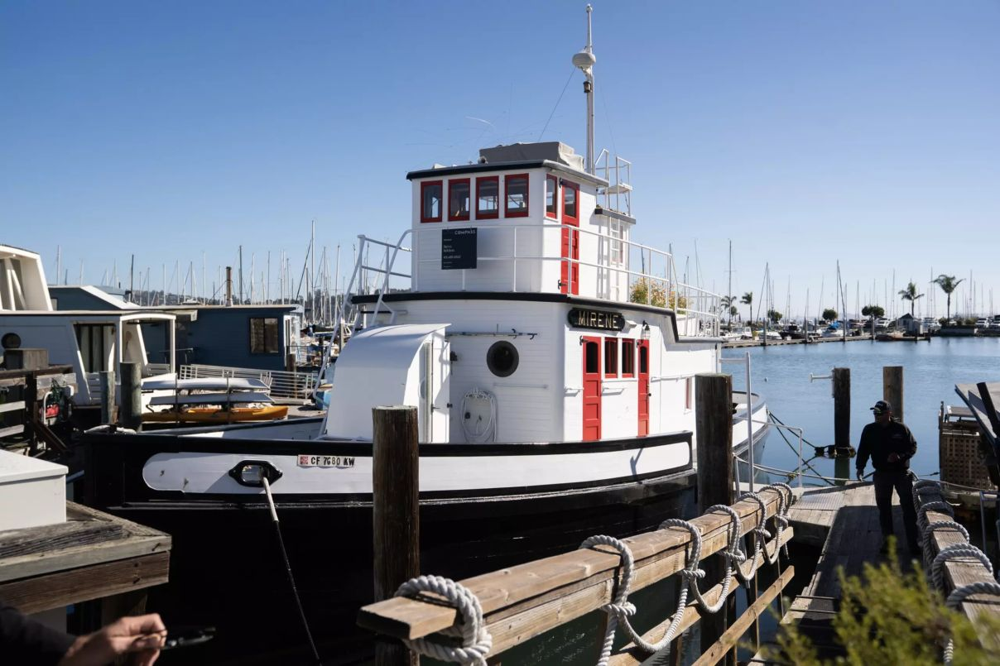

Matt Mullenweg zvažuje koupi lodi, na které se psala část historie technologické kontrakultury
Historická loď Mirene byla čtyřicet let domovem Stewarta Branda a součástí prostředí raných hackerů, online komunit a technologické kontrakultury San Francisca.

Matt Mullenweg, spolutvůrce WordPressu a zakladatel Automatticu, zveřejnil na svém blogu příspěvek s poměrně dramatickým názvem Major Life Announcement.
Člověk by čekal prodej firmy, svatbu, dítě nebo alespoň oznámení, že WordPress od příští verze poběží výhradně na blockchainu, protože jsme si zjevně ještě dost neublížili.
Ve skutečnosti Mullenweg oznámil, že podal nabídku na koupi lodi.
Zatím tedy není úplně přesné říkat, že ji už vlastní. Evidentně ji ale chce převzít. A nejde o úplně obyčejnou loď.
Jmenuje se Mirene, byla postavena v roce 1912 a posledních více než čtyřicet let byla domovem Stewarta Branda a Ryan Phelan.
Tím se z příběhu „technologický milionář si kupuje pěknou loď“ stává něco podstatně zajímavějšího. Mirene je totiž fyzický artefakt technologické kontrakultury San Francisca — místo, které spojuje rané hackery, osobní počítače, první online komunity a prostředí, ze kterého vyrostla velká část Silicon Valley.
A teprve potom je zajímavé, že jde také o 64 stop dlouhý dřevěný remorkér, který má za sebou více než století historie.
Proč je Mirene významná
Pokud vám jméno Stewart Brand nic neříká, není to zas tak překvapivé. Je jedním z těch lidí, jejichž vliv je podstatně větší než jejich obecná známost.
V roce 1968 začal vydávat Whole Earth Catalog. Byla to zvláštní směs katalogu nástrojů, knih, technologií, ekologického myšlení, alternativního životního stylu a návodu, jak si spoustu věcí dělat sám.
Nebylo to internetové médium. Internet pro veřejnost v dnešním smyslu samozřejmě ještě neexistoval. Jenže principem Whole Earth Catalog připomínal něco, co později internet udělal ve velkém: najít zajímavé věci, propojit lidi s informacemi a dát jim nástroje, aby si s nimi něco udělali sami.
Jeho vliv na ranou počítačovou kulturu byl obrovský. Brand se později podílel také na vzniku The WELL, jedné z prvních významných online komunit, která vznikla v roce 1985.
Pomáhal organizovat také první Hackers Conference v roce 1984. Ne „hacker“ v dnešním televizním významu člověka v kapuci, který za sedmnáct sekund nabourá Pentagon, protože zuřivě píše na klávesnici.
Šlo o původní hackerskou kulturu — programátory, experimentátory a lidi fascinované tím, co všechno mohou osobní počítače umožnit.
Mirene byla součástí prostředí, ve kterém se tihle lidé setkávali. A to je důvod, proč mi přijde nepřesné nazývat ji prostě historickou lodí.
Je to fyzický artefakt technologické kontrakultury San Francisca. Místo, kterým prošla komunita lidí spojujících hippies šedesátých let, první hackery, osobní počítače a nakonec prostředí, ze kterého vyrostla velká část Silicon Valley.
A dnes na ni chce nastoupit člověk, který o několik desetiletí později vytvořil jeden z nejdůležitějších nástrojů otevřeného webu.
To už je skoro podezřele hezká symbolika.
Co je vlastně Mirene
Mirene začínala jako 64 stop dlouhý dřevěný remorkér, postavený roku 1912 v Oregonu.
Když ji Stewart Brand a Ryan Phelan v roce 1982 koupili, měla za sebou sedmdesát let služby a nejlepší období rozhodně nebylo před ní.
Loď byla ve velmi špatném stavu. Brand později vzpomínal, že části dřeva byly natolik shnilé, že je bylo možné prakticky nabírat rukama.
To je obvykle okamžik, kdy rozumný člověk řekne: „Děkuji, podíváme se ještě na jiné nabídky.“
Brand a Phelan ji koupili. Za zhruba osm tisíc dolarů.
Následovala rozsáhlá rekonstrukce a z původního pracovního remorkéru postupně vznikl obytný dům na vodě — plný dřeva, knih, historie a věcí, které vypadají, jako kdyby tam byly odjakživa. Později Mirene dokonce znovu dostala motor a stala se opět skutečně plavbyschopnou lodí, ne jen velmi komplikovaně ukotveným domem.
Brand s Phelan na ní strávili přibližně čtyři desetiletí.
Kuchyňský stůl Mirene údajně pochází z jiné lodi, na které pobýval Otis Redding. A podle dlouho tradovaného příběhu mohl právě u něj napsat část skladby (Sittin’ on) The Dock of the Bay.
Důležité je ono „mohl“. Není to něco, k čemu existuje notářsky ověřený zápis s fotografií Reddinga, propiskou a dnešním datem. Ale legenda k Mirene patří a zmiňuje ji i Mullenweg.
Takže jestli nabídka projde, bude jeden z lidí stojících za WordPressem blogovat u stolu, u kterého možná vznikla jedna z nejslavnějších písní šedesátých let, na lodi člověka, který spoluutvářel kulturu, ze které později vyrostl moderní internet.
A pak někdo řekne, že staré věci nemají metadata.
WordPress nastupuje na palubu
Mullenweg používá myšlenku stewardship. Česky něco mezi správcovstvím, péčí a převzetím odpovědnosti za něco, co existovalo dávno před vámi a mělo by ideálně existovat i dlouho po vás.
Přirovnává to k založení firmy. Zakladatel bude mít ke svému projektu vždy vztah, který žádný nový majitel úplně nenahradí. Ale někdy lze najít někoho, kdo převezme pochodeň a bude pokračovat.
U stodvanáctileté dřevěné lodi je „převzít pochodeň“ asi formulace, kterou bych osobně používal trochu opatrně. Ale myšlenka funguje.
Stewart Brand reprezentuje úplně jinou generaci technologické kultury než Matt Mullenweg. Brandova generace hledala, co by počítače, sítě a přístup k informacím mohly vůbec znamenat. Byla v ní kontrakultura, DIY přístup, první osobní počítače, první online komunity a dost lidí, kteří pravděpodobně vlastnili více páječek než kravat.
Mullenwegova generace už nastoupila do existujícího webu a vytvořila nástroje, díky kterým na něm mohl publikovat prakticky kdokoliv. WordPress dnes pohání obrovskou část veřejného webu.
V jistém smyslu je tedy docela poetické, že člověk jedné internetové generace chce převzít fyzický domov člověka z generace předchozí. Ne jako muzeum, ale jako něco, co bude dál používat.
Mullenweg dokonce píše, že doufá, že právě u kuchyňského stolu na Mirene bude hodně blogovat. A ten stůl má samozřejmě taky příběh. Protože tahle loď očividně odmítá mít jedinou normální součást.
Real artists ship
Mullenweg celý post zakončuje několika slovními hříčkami, kterým se u koupě lodi prakticky nedá vyhnout. Odkazuje například na známé:
Real artists ship.
V technologickém světě znamená ship něco vydat, dokončit a dostat mezi lidi. V tomto případě je ship zároveň doslova loď.
Ano. Je to trochu dad joke. A ano. Použil bych ho taky.
Jenže hned vedle je mnohem zajímavější poznámka:
Longevity is all about maintenance.
Dlouhověkost je především otázkou údržby.
A to dokonale sedí nejen na Mirene. Sedí to na software, na WordPress, na internet, na komunity, na historické budovy a vlastně na většinu věcí, které mají přežít vlastní tvůrce.
Možná si tedy nekupuje jen loď
Mirene byla postavena v roce 1912. Přežila dvě světové války, několik technologických revolucí a éru, během které se počítač změnil z místnosti plné techniky na destičku v kapse.
Čtyřicet let byla domovem lidí, kteří stáli velmi blízko vzniku kultury moderních technologií. Teď o ni projevil zájem člověk, jehož vlastní práce výrazně ovlivnila další kapitolu stejného příběhu.
Možná v tom nemusíme hledat žádnou velkou metaforu. Možná se Mattu Mullenwegovi prostě líbí krásné staré lodě a má dost peněz na to, aby si jednu koupil. To je velmi pravděpodobné vysvětlení.
Ale stejně se mi líbí ta druhá vrstva.
Člověk, který pomáhal stavět otevřený web, chce převzít loď člověka, který pomáhal formovat kulturu, ze které ten otevřený web vyrostl.
Jedna generace předává druhé něco fyzického. Ze dřeva, mosazi a motoru.
Ne repository. Ne doménu. Ne startup.
Loď.
A možná právě proto ten příběh působí tak dobře.
Internet má totiž tendenci tvářit se, že všechno začalo před pěti lety. Mirene připomíná, že některé jeho kořeny jsou mnohem starší.
A občas dokonce plavou.